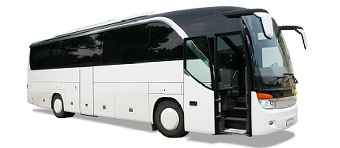

<ion-header>
  <ion-navbar color="blueGray">
    <ion-title>
      Inicio
    </ion-title>
  </ion-navbar>
</ion-header>

<ion-content padding>
  <h1 text-center>Control de Horas y Transfers 1.0</h1>
  
  <h4 text-center>Controla las horas que trabajas y los transfers que realizas cada dia, semana o mes</h4>
  <button ion-button block large color="blueGray" (click)="entrar()">Entrar</button>
</ion-content>
<ion-footer text-center>¡Recuerda que está prohibido el uso del móvil mientras conduces!</ion-footer>
